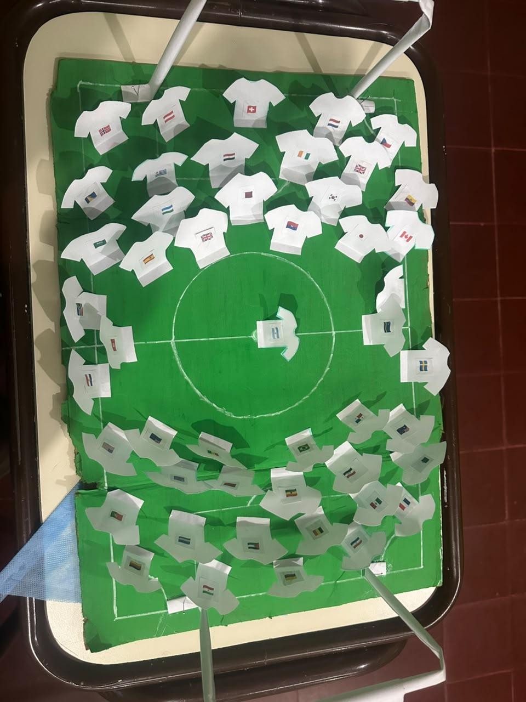
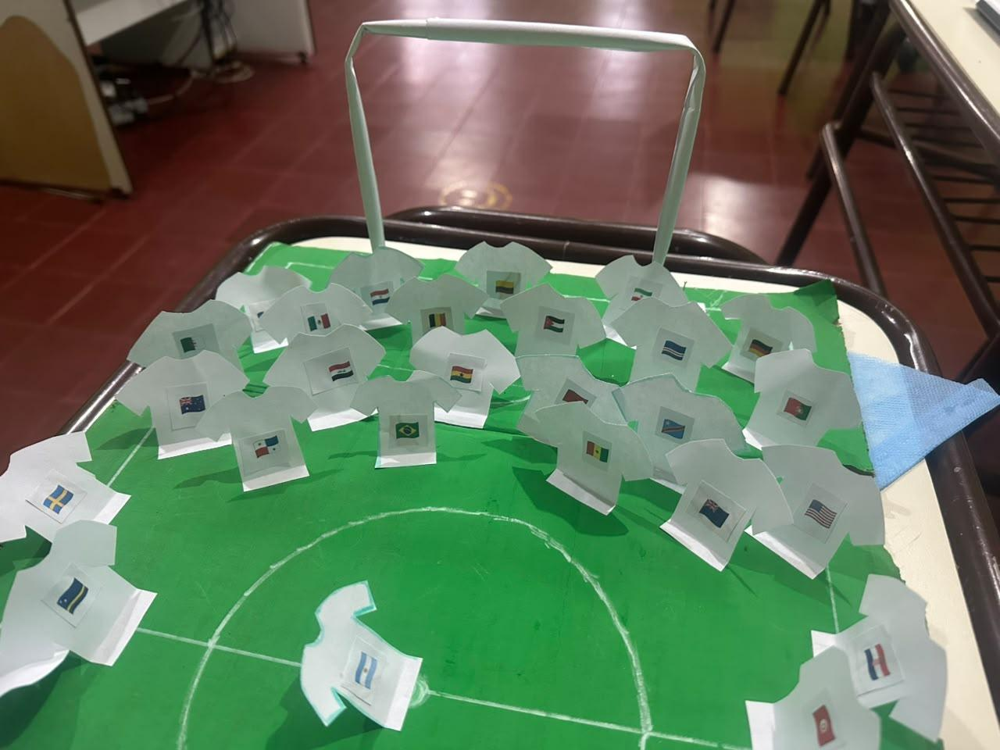

A partir de esta pregunta, nos propusimos realizar una actividad diferente en la clase de segundas lenguas: construir una maqueta de una cancha de fútbol como parte de “El partido por el ambiente”.
Construimos nuestra maqueta
Durante esta experiencia trabajamos en equipo, utilizamos nuestra creatividad y reflexionamos sobre el cuidado de nuestro entorno. A través de la construcción de nuestra maqueta, descubrimos que el deporte también puede ser una oportunidad de aprender, compartir ideas y promover acciones que ayuden a proteger el ambiente. En nuestra revista digital queremos compartir nuestro trabajo, mostrar cómo fue el proceso de construcción y contar qué aprendimos durante esta experiencia.
Algunos de los materiales que utilizamos fueron: cartón, cinta de papel, plasticola, hojas rayadas y, por último, colores.

Aprender a cuidar el ambiente
Conocer más sobre las canchas de fútbol que existen en nuestro planeta es el primer paso para aprender a cuidar nuestro ambiente. Es importante reflexionar sobre lo que sucede en estos espacios y pensar qué podemos hacer para evitar seguir contaminando y dañando nuestro planeta.
De esta manera, descubrimos que una cancha de fútbol también puede convertirse en un espacio para aprender a cuidar el ambiente y pensar juntos cómo podemos protegerlo. Podemos mantener la cancha limpia, separar los residuos, reciclar y evitar desperdiciar agua. Así, mientras jugamos, compartimos y nos divertimos, también aprendemos a respetar, cuidar y proteger nuestro planeta.

Ser cuidadosos con nuestras canchas siempre nos ayudará a jugar, compartir y divertirnos de manera más tranquila, segura y saludable. Cuidar estos espacios es una responsabilidad de todos. Porque cuando cuidamos nuestra cancha, también cuidamos a quienes la disfrutan y a nuestro planeta. Cada pequeña acción cuenta.